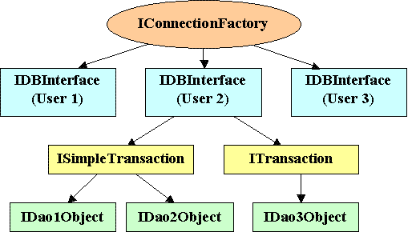
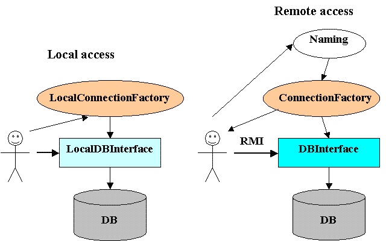
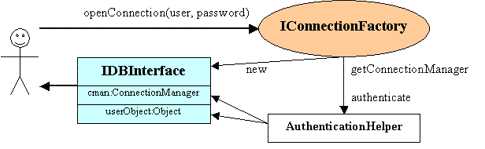

After preprocessor has generated files, we can finally use them (see example):
package example1;
import example1.dao.Example1;
import example1.dao.IExample1;
import sqlg2.db.*;
import java.sql.Connection;
import java.sql.SQLException;
import java.sql.Timestamp;
import java.util.List;
/**
* Simple example of SQLG-generated code usage.
*/
public class Example1Test {
public static void insertScott(IExample1 iex1) throws SQLException, RemoteException {
// Calling business method
iex1.insert(7788, "SCOTT", "ANALYST", null, new Timestamp(System.currentTimeMillis()));
}
public static void print(IExample1 iex1) throws SQLException, RemoteException {
// Calling business method
List<Example1.EmpRow> list = iex1.selectAll();
// Printing result
for (Example1.EmpRow emp : list) {
System.out.println(emp.empNo() + "\t" + emp.empName());
}
}
public static void main(String[] args) throws SQLException, RemoteException {
/**
* JDBC URL to use
*/
String url;
if (args.length <= 0) {
System.err.println("No JDBC URL specified");
return;
} else {
url = args[0];
}
SQLGLogger logger = new SQLGLogger.Simple();
// Opening connection
Connection connection = SingleConnectionManager.openConnection(
"oracle.jdbc.driver.OracleDriver", // JDBC driver class name
url, // JDBC URL
"sqlg2", // Database login
"sqlg2" // Database password
);
ConnectionManager cman = new SingleConnectionManager(connection);
IDBInterface db = new LocalDBInterface(cman, new sqlg2.db.specific.Oracle(), logger);
// All the code above was a preparation required to setup database
// connection, now real work begins:
try {
// Getting data access interface
IExample1 iex1 = db.getSimpleTransaction().getInterface(IExample1.class);
// Running business methods
insertScott(iex1);
print(iex1);
} finally {
db.close(); // closing DB connection
}
}
}

The root object of SQLG library objects hierarchy is IConnectionFactory.
It can be local (LocalConnectionFactory obtained
by its constructor) or remote (HttpConnectionFactory).

You can create DB connection (IDBInterface) using its
method openConnection(),
providing user name and password. You can think of IConnectionFactory
as of DataSource, and IDBInterface as of
Connection. But, unlike in JDBC, you cannot directly invoke business methods on connection: there is
another level of hierarchy – transaction objects. It was introduced for better control of transactions.
Most of the time you need transactional behavior only on business methods – whole business method is either committed or rolled back. But in some cases you will need long-running transactions consisting of multiple business method calls. So, there are two types of transactions:
ISimpleTransaction
ITransaction, which extends ISimpleTransaction and adds usual commit and
rollback methods.
getInterface() method
from both of them, but transactional behavior of these objects differ. These data access objects are similar to
stateless EJB beans (with declarative transactions for ISimpleTransaction
and client-demarcated transactions for ITransaction).
IConnectionFactory object owns a reference to SessionFactory object. It is responsible for
connection pool allocation and user authentication. When user tries to log in calling
openConnection()
method,
SessionFactory.login
method is called first. It returns newly created connection pool for the user together with session object (can be any serializable
object).

Simple transactions allocate connection from a pool before business method call and release it after the call
completes. Non-simple transactions allocate connection at transaction start (when any statement is executed) and
release it only when they are committed or rolled back. Since it is possible to start more than one transaction in a
single IDBInterface object, this behavior may lead to
deadlock between transactions (see javadoc and example).
SQLG library contains no implementations of SessionFactory,
but it's easy to write your own implementation, for example, multi-connection pool implementation exploiting some pooling
library (see example).
4. Exotic possibilities
IDBInterface with
getAsyncTransaction method. In case of remote connection this process will run on the server side.
@SQLG annotation and "entity" is marked with
@SQLG(inline = true) annotation. Preprocessor generates only server-local wrappers
for "entity" objects, which can be obtained only from facade objects with the use of
GBase.getInterface(Class iface) method (see
example).